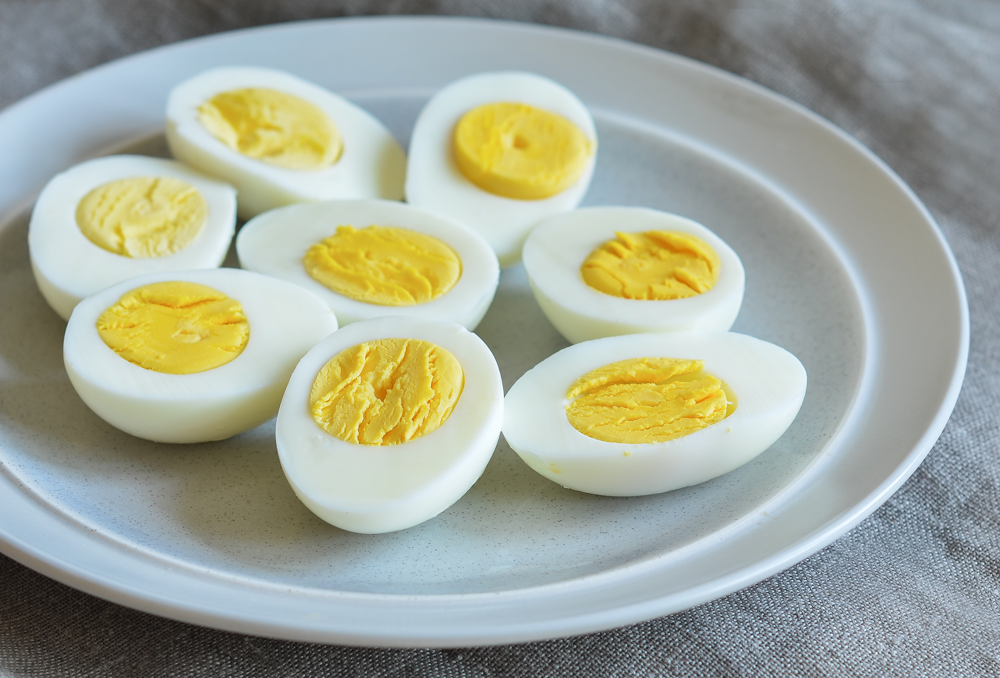

Boiled Egg Recipe

Description
How to prepare boiled eggs. A step-by-step guide on how to make this simples, yet delicious, meal.
Healthy, nutritious, inexpensive, protein rich, and quick to make.
Ingredients and Materials
- Crude chicken eggs
- Cooking pot
- Tap water
- Salt
- Knife
- Olive oil (optional)
Steps
- Put the crude chicken eggs in the cooking pot.
- Fill the cooking pot with tap water until the egg(s) become completely submerged.
- Boil the water on a cooker for 15 minutes.
- Turn off the cooker and discard the hot water.
- Wait a few minutes for the eggs to cool down (you can add more tap water in the pot to accelerate this).
- When the eggs become cooled enough to be handled by hand, crack them one by one, discard the shell, putting the eggs on a plate.
- Slice the cooked eggs with a knife. Preferably on the longitudinal plane of the egg.
- Add with salt and olive oil to taste.
- Enjoy!